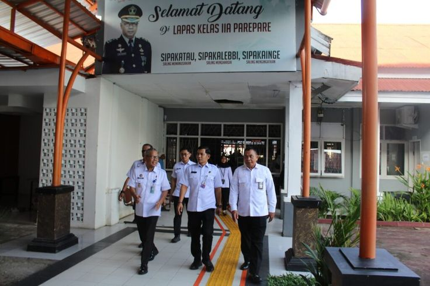
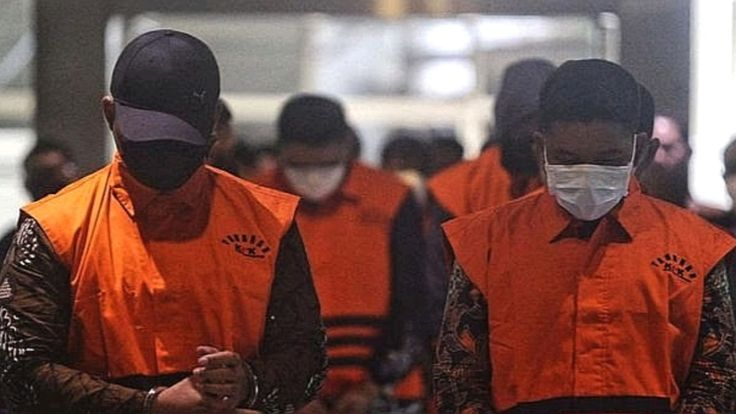

Penyebab
Pembukaan lahan dengan membakar, puntung rokok, dan lahan gambut kering yang mudah menyala.
SelengkapnyaKebakaran hutan dan lahan (karhutla) hampir selalu bermula dari ulah manusia, lalu meluas saat musim kemarau dan lahan gambut mengering.
Pembukaan lahan dengan membakar, puntung rokok, dan lahan gambut kering yang mudah menyala.
SelengkapnyaAsap mengganggu pernapasan, penerbangan terhenti, dan hutan melepas karbon dalam jumlah besar.
SelengkapnyaBuka lahan tanpa bakar, jaga kelembapan gambut, dan laporkan titik api sedini mungkin.
SelengkapnyaOrang utan hidup di hutan Kalimantan dan Sumatra. Saat hutan terbakar, mereka kehilangan pohon tempat makan, tidur, dan berlindung.
Geser poster atau tekan tombol panah. Klik poster untuk memperbesar.
BRIN akan mencoba teknologi Dumakron dengan drone di Kalimantan untuk membantu penanganan karhutla.

Status siaga darurat diperpanjang agar pemadaman terus berjalan dan api tidak meluas.

Puluhan perusahaan di Kalimantan dan Sumatra disebut sudah masuk proses hukum.